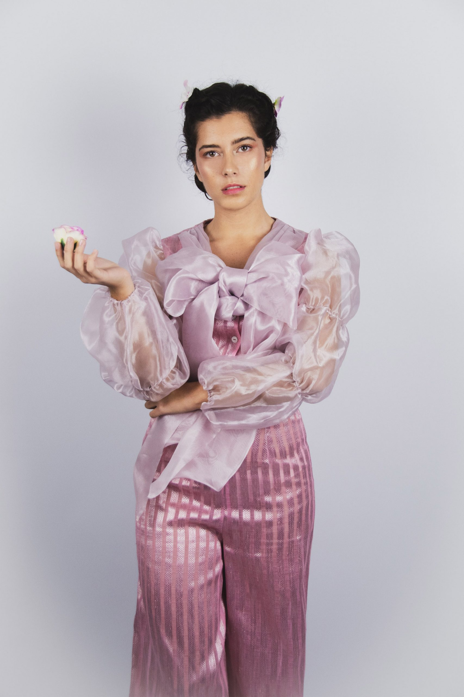
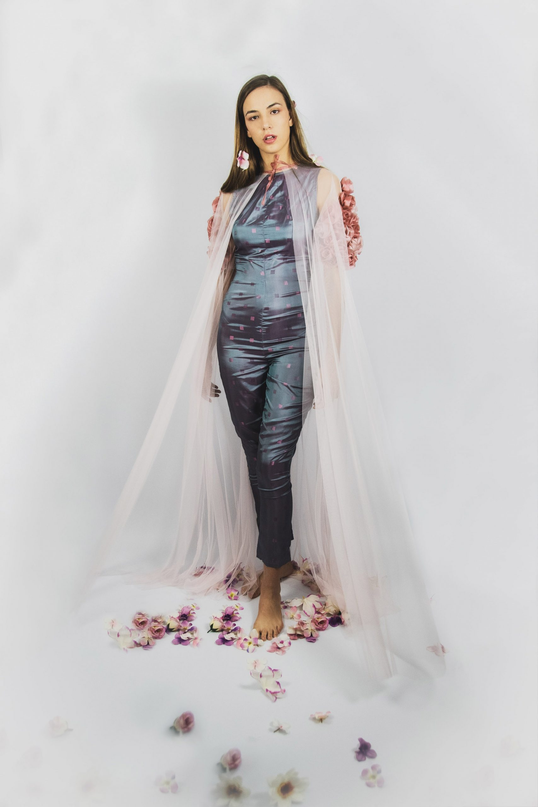
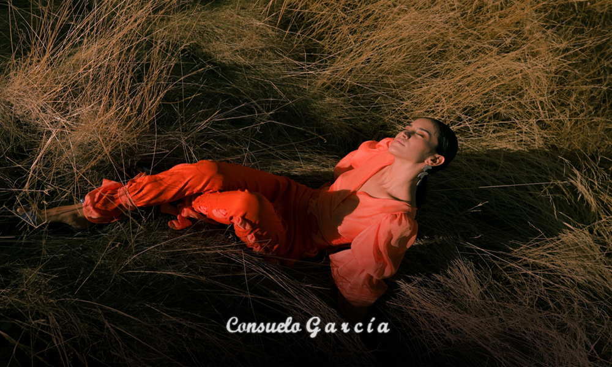

2020
Premio Code 41 de Moda
Consuelo García Atelier gana el premio Code 41, un reconocimiento a la moda artesanal española.
Leer más →Liberalidad, alabanza, esperanza, ánimo, generosidad, virtud y grandeza.
Ver colección"Prendas de edición limitada, confeccionadas a mano por mujeres artesanas en Utrera, Sevilla."
Cada pieza es única, hecha con amor y dedicación en nuestro taller.

Añadir imagenEdición limitada

Añadir imagenHecho a mano
Confección propia

Tercera generación de modistas, nacida y criada rodeada de telas e hilos. Economista por la Universidad de Sevilla y apasionada del arte, fundé Consuelo García en 2020 como una oda a la alegría, la esperanza y las ganas de vivir.
Una marca que nació como homenaje a mi madre y que lleva en su esencia el color, la forma, la comodidad y el trabajo artesanal.
Conoce mi historiaTodas nuestras prendas se confeccionan en nuestro taller de Utrera. Creamos diseños a medida para ocasiones especiales, acompañándote desde el primer boceto hasta la entrega final.
Descubre el proceso
Consuelo García Atelier gana el premio Code 41, un reconocimiento a la moda artesanal española.
Leer más →Presentamos nuestra primera colección, una celebración del color, la forma y la artesanía sevillana.
Leer más →
ImagenYa puedes descubrir y contactar con nosotros para adquirir nuestras piezas desde cualquier lugar.
Leer más →